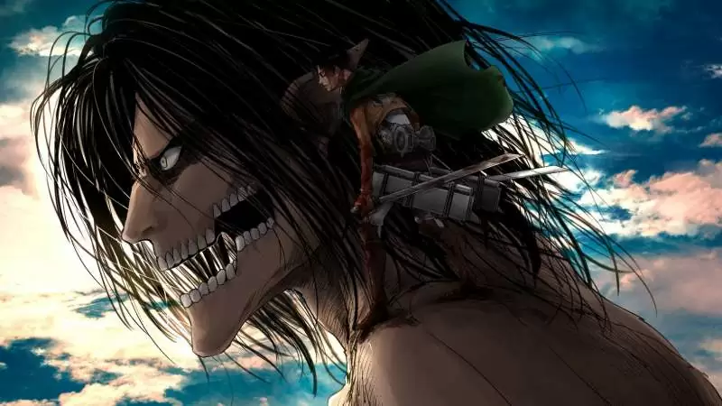

A primeira temporada de Shingeki no Kyojin (進撃の巨人? também conhecido como Attack on Titan), um anime baseado
no mangá de mesmo nome escrito e ilustrado por Hajime Isayama, foi produzida pelo Wit Studio em colaboração com
o Production I.G e exibida originalmente entre 7 de abril e 28 de setembro de 2013 na emissora japonesa MBS.
A história cobre os primeiros 34 capítulos do mangá e narra as aventuras de Eren Yeager e seus amigos Mikasa Ackerman
e Armin Arlert, que vivem em uma cidade cercada por três grandes muralhas, que são a única defesa da humanidade contra
os "titãs", gigantes que comem humanos. Quando um Titã Colossal rompe a muralha de sua cidade natal, os três se
juntam a Divisão de Reconhecimento, um grupo de elite de soldados que lutam contra os titãs, na esperança de recuperar o mundo deles
Os cidadãos temem que estarão à mercê dos Titãs depois de muitos anos de paz.
Gêneros: Aventura, Ação, Fantasia, Anime
Rede: MBSTVJP
Data de Exibição: 7 de abril de 2013
Dirigido por: Tetsuro Araki
Escrito por: Yasuko Kobayashi

Todos os Titãs de Ataque da história
Sendo com toda certeza uma das criaturas mais fortes e mais bem exploradas em toda a história da série,
o Titã de Ataque dá nome à narrativa do anime e mangá que conhecemos como Attack on Titan. Pelo fato de seu nome ser,
literalmente, o da história, já podemos perceber a sua tamanha relevância, certo?
De fato, embora com todos os seus poderes e características bem revelados durante o seguimento da história,
esse Titã parece ter ainda mais habilidades ocultas, que podem vir a superar até mesmo outros Originais e, inclusive, o criador deles: o Fundador.